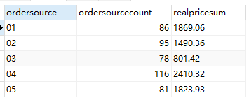
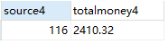
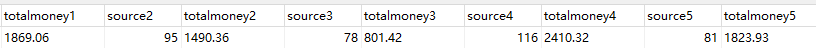
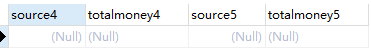
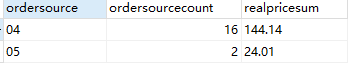
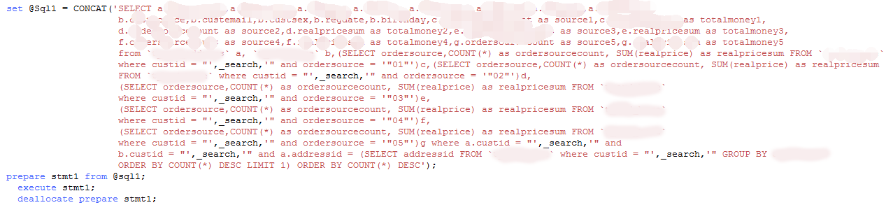

哭一下
发现自己一旦卡在某个问题较长时间上时,脑袋就容易发热,而且还晕甚至全身乏力,久而久之还会有点干呕,睡眠也不好,当然,主要想要的太多可是穷。哭哭哭哭哭哭哭。。。
开发背景
昨天下午,本来想摸鱼悠闲地生活的,结果组长突然给我丢来一个需求：写一个sql关于用户购买行为分析。
我一听,哇擦,好牛逼啊,我会吗?sql哎,我不会写哎?内心：组长,求放过,让我浑水摸鱼吧,找旁边的java开发熊吧。各种神佛保佑啊。。。
然后,就没有然后了,组长扔完需求就走了。啊,美好的摸鱼生活就这么没了啊。大哭！
好吧,看看需求吧。
一份Excel表里面罗列了一堆字段,看下图(好吧,事实证明我又错了,我以为是传一个参数然后查他的行为,原来不是,真正的需求是不传参数得到所有用户的行为分析,泪崩~~)：
什么行为分析?
对应上表,
- 用户来源代表用户在哪个平台注册的(PC,wechat,app),这个较简单
- 用户id,也简单
- 注册日期,简单
- 常用姓名,我日你MM。这个是用户下单时用的最多的姓名其实也是昵称
- 手机号,也是用户下单用的最多的手机号,日你mon
- 邮箱,一样,用户下单时用的最多的邮箱
- 年龄,简单
- 性别,简单
- 城市
- 地址,这个是常用的下单地址(常用的下单地址里包含城市、详细地址、姓名、手机号、邮箱),只需要根据addressid求和统计并且排序得出
- 各个平台的购买次数以及总金额,靠,这又是另一张表了,而且还是需要计算。(难点在这里)
先看看最简单版本的把各个平台及对应的下单总是和总花费金额给列出来：
一开始我用某个测试同事的custid,得到如图结果：

没问题啊,都查出来了,但是问题是我最终需要的所有的数据都在一行上面,如上图所示数据有好几行,那肯定是不行的,那么我需要把他们弄到一行去,这里让我琢磨了一段时间。后来我想到了最low的方法,ordersource一共就那么几个值,干脆直接写死,我需要的是各个平台对应的下单次数以及下单金额,那么上图查出来的都在同样的字段名下肯定不行的,不行怎么办呢,想了好久发现可以取变量名啊。
举例：
结果如图:

升级版：

这不就OK了吗?
怎么会想到的,还不是被逼的！
开玩笑,看以前的项目,发现有select a.xx,b.xx from 表1 a, 表2 b where a.某个字段 = b.某个字段,我想查多个不就是以这为基础吗？
当然有很多数据不是现成的,需要从表中查出来得到结果集,根据这个结果集去查。知道了需求就去百度呗,终于发现了(SELECT ordersource,COUNT(*) as ordersourcecount, SUM(realprice) as realpricesum FROM 表名 where custid = 值 and ordersource = '04' GROUP BY ordersource)f这种写法,其实括号内的查询就得到了一张新表,我需要的就是这个新表的数据,给它弄个变量名不就OK了吗？这个解决了,只是我以为。。。
至于查下单最多的地址,其实只要在订单表里查对应的用户所有的下单地址,然后根据addressid来count()并且排序,使用limit 1即可得到第一条数据也是最多的,然后根据得到的addressid去地址表里查所有需要的信息。
最终还是很快写完了第一版,满满的仔细,然后突发奇想,查查我自己的呗,虽然我自己测试时买的金额不多(测试时把商品价格都改为1分钱的),但是查一查满足一下自己吧,结果,不查不知道,一查吓一跳！
看图(简化版的):

之前的地址什么的还有数据,但是这里的各个平台的下单次数以及总金额全都没有,泪崩！！！
一开始怀疑自己是不是没在这个数据库里买过,然后一查,有数据,不用说了,存储过程有问题呗,改吧。
测试一下,看看自己是什么问题：
结果如图：

看到没有,我只在两个平台下过单,而测试在所有平台都下过单所以都有数据,但是我有的平台没下过单没数据,所以查出来是空,但是为什么查出来所有的平台数据都是空呢？
就这个问题,让我从晚上加班一直到今天早上11点都没头绪,然后问了公司前辈(你看年轻人遇到问题想不通,百度又解决不了的毕竟各个人遇到的问题总不可能完全一样,只能问前辈了,他们经验老道,能快速定位问题透过现象发现本质),前辈看了会也头疼,然后说你先回去我帮你看看,有结果告诉你,最迟中午给你答复。
好吧,毕竟有人帮忙总比自己干瞪眼要好。
没想到一会儿工夫,他说你把子查询里面的group by去掉不就好了嘛。
我一听,我擦,试试,咦,有用！写进存储过程,OK了！！！卧槽,这么简单,fuck啊！！！
心里万分感激前辈。
最终存储过程：

心里十分惬意同时自信满满的交给组长,结果没一会儿,组长说你没理解我的意思,我要的是能查所有用户的行为分析并且做个统计,不需要传参数。
我：心里有句MMP不知能不能讲。。。
好了,一切回到原点。。。
我又回来了,结局是我失败了,心疼
最后还是组长亲自出手了,看来要好好学sql了,之前只是复制粘贴别人的改改,一些基本语法都不会。。。